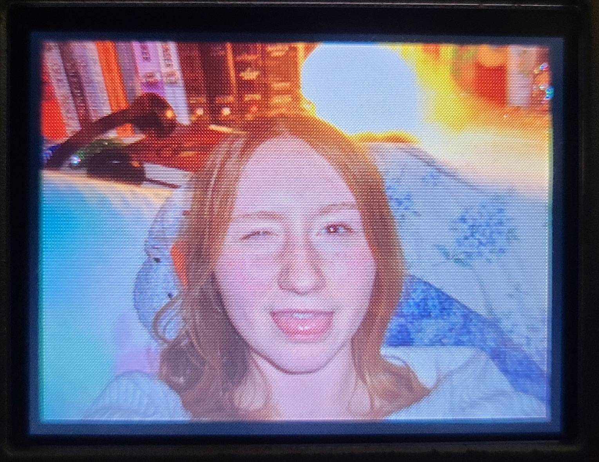

Hi! My name is Bryn Slater. I am 18 years old and a first-year graphic design student at Algonquin College.
Outside of school, I enjoy hanging out with friends, listening to music, making art with my oil pastels, playing sports and staying active! Growing up I was always making art but it was always with coloured pencils, crayons, and oil paints. Now that I'm older, my favourite medium of art is oil pastels because of the soft feel it has when you use it on the paper. Something I that I also enjoy doing is exploring. Usually my mom and I will plan camping trips together to do in the summer. We're trying to visit all (most) of the Parks Ontario campsites, and so far we've been to a lot of the ones around Ottawa and Peterborough. Last year over March break, I was able to go and visit Greece with my school and it was such a life changing experience. Greece is such a beautiful country and I would love to go back!
Some fun facts about me are that I played five sports in highschool (field hockey, volleyball, soccer, softball, and beach volleyball), I can speak French and I'm currently learning German, and I have a brown golden-doodle labra-doodle named Charlie.
"The only way to do great work is to love what you do."
- Steve Jobs
My Skills
- Adobe and InDesign layouts
- Punctual on deadlines
Graphic Design Courses
- Concept Sketching
- Typography
- Graphic Design
- Web Design
- Computer Graphics
- Communications